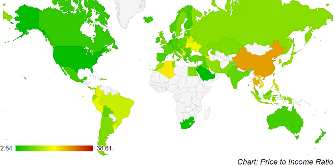
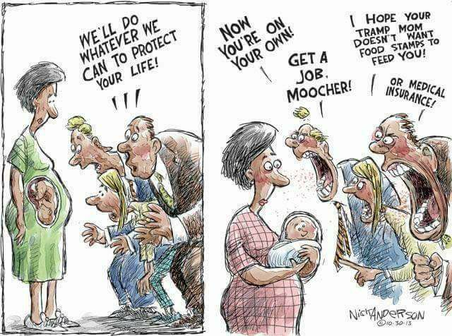

Ed Sheeran의 "The A Team" 가사 해석 - 마약과 월세 이야기
게시: 2017-12-31T18:52:16+09:00
에드 쉬란(Ed Sheeran)은 "Shape of You"라는 곡으로 가장 잘 알려진 젊은 영국 가수입니다만, 세상에 이름을 알린 데뷔 곡은 "The A Team"이라는 포크 발라드입니다. 평론가의 말에 따르면 크림치즈보다 부드러운 목소리를 가진 에드 쉬란이 감미롭고 경쾌하게 부른 이 노래는, 멜로디와는 달리 무척이나 암울한 내용을 담고 있습니다. 마약에 중독된 젊은 매춘부의 이야기지요. 노래 제목이 "The A Team"인 것도 좋은 의미가 아니라 A급 마약, 즉 크랙 코카인(crack cocaine)에 중독된 사람들을 말하는 것입니다.
("The A Team" 뮤비 중에서)
가사 중 '하지만 최근 그녀의 얼굴이 조금씩 무너져 내려요, 패스트리 껍질처럼요'라는 부분은 너무나 처절한 현실을 너무 아름답고 담담하게 노래로 표현하고 있어 섬뜩하기도 합니다. 에드 쉬란은 18살 때 자원 봉사차 이런 여성들을 위한 쉼터에 공연을 갔다가 엔젤(Angel, 천사)라는 이름의 매춘부를 보고 또 그 처참한 이야기를 듣고 너무나 충격을 받은 나머지 집에 와서 이 곡을 쓰게 되었다고 합니다. 그래서 가사 중에도 천사 이야기가 자주 나오는 것입니다. 그는 이 노래를 일부러 경쾌하게 만들었고 가사에서도 마약이나 매춘이라는 이야기는 전혀 쓰지 않았다고 합니다. 너무나 어두운 주제였기 때문입니다. 하지만 아무리 무섭고 추악한 내용이라도 분명히 실존하는 불행이니, 어떻게 해서든 세상에 알리고 싶었던 것이지요.
(에드 쉬란은 누가 봐도 못 생긴 가수입니다만, 뛰어난 노래 실력을 바탕으로 최근엔 급기야 (비록 단역이지만) 인기 미드 '왕좌의 게임'에 출연하기도 했습니다. 저는 '아, 서구에서는 노래 실력만으로 가수를 평가하므로 못 생긴 가수도 출세할 수 있는데, 외모지상주의인 우리나라에서는 오로지 잘 생기고 예뻐야만 가수 노릇도 하는구나'라고 한탄했습니다. 그런데 그런 생각을 한 날 저녁에 집에 와서 TV를 켜보니 변진섭이 나오더라고요. 그걸 보고 '아, 그게 아니라 그냥 노래를 정말 잘 하는 가수가 요즘 별로 없는거구나'라고 생각을 고쳤습니다. 생각해보니 외모와 무관하게 노래만으로 엄청난 인기를 얻은 가수들이 우리나라에도 많네요.)
그래서 어쩌자는 말이냐 라고 묻는다면 에드 쉬란은 가사에서 이렇게 표현하고 있습니다. '이번(생)에는 그냥 이렇게 사라질거야.' 역시 처참한 말이자만 대부분의 경우 어쩔 수 없는 현실입니다. 제가 즐겨보는 네이버 웹툰 '덴마'에서도 나오는 대사이지만, '약쟁이는 한번 손을 대면 그것으로 끝'인 경우가 너무 많기 때문입니다. (덴마에서 지로는 그 불가능을 뒤집고 결국 사람 구실하게 되지만, 그 과정은 정말 수많은 독자들의 복장을 뒤집어 놓았지요.)
특히 제가 개인적으로 인상 깊었던 부분은 '집세를 내기 위해 버둥거려요'라는 부분이었습니다. 서구의 영화나 소설을 보면 저렇게 집세를 내는 것이 서민들에게 정말 힘든 과제이자 영원한 고난으로 표현되는 경우가 많더라고요. 이에 대해서는 예수님도 한마디 하셨지요. (꼭 당시 예루살렘의 월세난을 탓하신 것 아닌 것 같긴 한데...)
(마태복음 8:20) 예수께서 이르시되 여우도 굴이 있고 공중의 새도 거처가 있으되 인자(the Son of Man)는 머리 둘 곳이 없다 하시더라
정말 짐승들과는 달리, 사회적 동물인 인간은 존재하기 위해서는 반드시 사람 사는 동네에 자신의 공간을 가져야 하고, 그 공간에 대해 돈을 내야 합니다. 사람의 존재 자체만으로 돈을 내야 하는 점에 있어서 집세는 국가가 걷는 세금과 다를 바가 없습니다. 집세에서 벗어나는 길은 인간으로서의 삶을 포기하고 산으로 들어가든지 (그럴 경우 사실 그린벨트 위반으로 사실 범법자가 되지요) 정말 죽어야 합니다.
게다가 집세라는 것이 현대의 도시화된 사회에서는 정말 큰 부담이 되고 있습니다. 어떤 해외 투자 사이트를 보니 (근거는 잘 알 수 없습니다만) 집세는 월 소득의 28% 이하가 되도록 살아야 한다고 하더군요. (출처 : https://www.investopedia.com/terms/h/housing_expense_ratio.asp ) 그러나 실제로 전세계 주요 도시의 가처분 소득 대비 집세 비율을 보면 파리나 로마 등에서는 대략 월소득의 30~33% 정도를 월세로 내야 합니다. 뉴욕은 거의 50%나 내야 하고요. 그런 곳은 구미 선진국이라서 그런 것 아니냐라고 하시겠지만, 도쿄도 약 30%, 베이징과 싱가포르는 약 43~44%, 홍콩은 무려 50%가 넘습니다. (출처 : https://www.weetas.com/article/rent-income-ratio-17-major-cities )

아마 서울도 만만치 않을 것 같은데, 서울은 전세라는 희한한 제도가 있어서 그런지 이런 식의 조사는 없더군요. 제가 부동산 시세 사이트에서 본 20평짜리 아파트 월세 시세인 75만원과 최근 발표된 가구당 평균 근로소득인 3300만원 정도에서 각종 세금을 10% 제외한 금액인 3000만원을 비교를 해보니 (보증금이 5천이나 되긴 하지만) 소득 대비 월세 비율이 약 32% 정도로 나옵니다.
보통 연 3300만원 정도 버는 가구에서 이런저런 세액공제를 받고 나면 실제 세부담은 10% 정도 밖에 안 될텐데, 대신 집세로 30%나 내는거지요. 결국 헬조선 뿐만 아니라 전세계 공통으로, 나랏님 위에 건물주님이 계신 것입니다. 19세기 역사학자인 텐느(Hippolyte Adolphe Taine)라는 분이 지은 'The Ancient Regime'이라는 책에 따르면 1789년 프랑스 대혁명 이전에는 프랑스 농민이 교회와 (지주인) 영주와 국왕에게 빼앗기는 각종 세금 부담이 66% 정도였다고 합니다. 현대 무주택 도시 서민들의 부담은 그보다 낮은 40% 정도이니 혁명이 안 일어나는 것이겠지요 ?
자기 소유의 주택에서 살고 있어서 집세를 낼 필요가 없는 경우도, 그 집을 사느라 쓴 돈의 기회 비용, 대출 이자, 재산세 등을 고려하면 간접적으로 집세를 낸다고 할 수는 있습니다. 그러나 분명히 자본을 들여 자가를 소유한 경우엔 금전적으로 훨씬 더 유리하게 삶을 꾸려나갈 수 있습니다. 자본주의 세상에서는 주거비든 식품비건, 가난한 사람들이 상대적으로 더 많은 비용을 내도록 되어 있거든요. X마트 같은 곳에서 1~2주 단위로 식재료를 대량으로 사와서 쾌적한 주방에서 요리해 먹는 것이, X밥천국 등에서 한끼 때우는 것보다 상대적으로 더 싸게 먹힙니다. 같은 월급장이라도 부모님의 지원으로 아파트를 소유하며 직장생활을 하는 경우, 목돈이 없어서 오피스텔에서 월세로 사는 경우보다 10년 20년 뒤에는 재무재표의 풍경이 달라지게 됩니다. 특히 우리나라처럼 부동산 보유세가 낮은 경우 훌씬 더 그렇지요.
아래 해외 풍자 만화는 페이스북의 "Military Veterans Against Fascism"이라는 페이지에서 본 것인데, 미국 보수우파에서 낙태에는 그렇게 반대를 하면서, 정작 그렇게 보호하던 태아가 태어나자마자 '복지 혜택 따위는 꿈도 꾸지마라'라고 호통을 치는 모습을 풍자한 것입니다. 생각해보면 보수우파의 저런 정책은 굉장히 모순처럼 보이는데, 사실은 아주 일관성이 있는 정책입니다. 즉, 하나라도 인구수가 늘어야 부동산 등의 자산을 많이 보유한 보수우파 지지자들에게 도움이 되는 것입니다. 어떻게 생각하면 빈곤층에서 태어나 계속 빈곤층으로 살 운명의 아이가 더 많이 태어나는 것은 국가 세수에 도움도 안되고 또 국가의 복지 부담을 늘리므로 부유층에게 해로울 것 같지만 그렇지 않습니다. 아무리 가난하여 소득세 낼 것조차 없는 빈곤층이라도, 어떻게든 집세는 내야 하거든요. 우리나라에서도 소득세의 90%를 상위 10%가 낸다면서 소득세도 안내는 저소득층을 마치 기생충 취급하는 몰상식한 사람들이 있는데, 매우 잘못된 것입니다. 그 분들이 월세는 더 많이 부담하니까요.

그래서 어쩌자는 말이냐고요 ? 뭐 딱히 어쩌자는 것은 아닙니다. 어쩔 수 없는 현실인걸요. 저 노래 가사에 나오는 것처럼, 우리 모두 더 우월한 누군가(upper hand)의 밑에 있는 존재니까요. 저 노래에서는 upper hand라는 것이 마약-매춘 조직을 뜻하는 것이겠지만, 각박한 현대 사회 자체를 거기에 대입해도 뭐 크게 달라지지는 않습니다. 정말 예수님 말씀대로 오로지 서로 사랑하고 어려움에 빠진 이웃을 외면하지 않으면서 예수님이 재림하시는 그 날을 기다리는 수 밖에 없는 것 같아요. 꼬박꼬박 월세 내면서요.
에드 쉬란의 The A Team 감상은 아래 유튜브 링크를 클릭하세요.

The A Team
White lips, pale face
Breathing in the snowflakes
Burnt lungs, sour taste
핏기없는 입술, 창백한 얼굴
눈 내리는 거리에서 찬 바람을 마시니
기침으로 가슴이 아프고 피맛이 나요
Light's gone, day's end
Struggling to pay rent
Long nights, strange men
해가 저물고 하루가 끝났어요
집세를 내려면 이를 악물어야 하지만
밤은 길고 남자들은 낯설어요
And they say
She's in the Class A Team
Stuck in her daydream
Been this way since 18
사람들은 말하지요
저 여잔 클래스 A 팀에 속한다고요
백일몽에 사로잡혔는데
18세부터 계속 이 모양이었지요
But lately, her face seems
Slowly sinking, wasting
Crumbling like pastries
하지만 최근 들어
그녀의 얼굴이 서서히 무너져요
패스트리 껍질처럼 부서져 내려요
And they scream
The worst things in life come free to us
사람들은 비명을 지르지요
삶에서 최악의 것들은 우리에게 무료로 다가온다고요
'Cause she's just under the upper hand
And go mad for a couple of grams
그 여자는 누군가에게 조종당하기 때문이에요
2그램만 줘도 환장을 하지요
And she don't want to go outside tonight
And in a pipe she flies to the Motherland
Or sells love to another man
그녀는 오늘 밤엔 나가고 싶지 않아요
한모금만 빨면 엄마 나라로 날아가거나
또 다른 남자에게 사랑을 팔지요
It's too cold outside
For angels to fly
Angels to fly
바깥 세상은 너무 추워서
천사들도 날 수가 없어요
천사들조차도요
Ripped gloves, raincoat
Tried to swim and stay afloat
Dry house, wet clothes
찢어진 장갑, 레인코트
가라앉지 않으려 버둥거려요
집은 휑하고 옷은 축축하지요
Loose change, bank notes
Weary-eyed, dry throat
Call girl, no phone
잔돈, 지폐
지친 눈매, 쉰 목
콜 걸인데 전화기는 없어요
And they say
She's in the Class A Team
Stuck in her daydream
Been this way since 18
사람들은 말하지요
저 여잔 클래스 A 팀에 속한다고요
백일몽에 사로잡혔는데
18세부터 계속 이 모양이었지요
But lately, her face seems
Slowly sinking, wasting
Crumbling like pastries
하지만 최근 들어
그녀의 얼굴이 서서히 무너져요
패스트리 껍질처럼 부서져 내려요
And they scream
The worst things in life come free to us
사람들은 비명을 지르지요
삶에서 최악의 것들은 우리에게 무료로 다가온다고요
'Cause she's just under the upper hand
And go mad for a couple of grams
그 여자는 누군가에게 조종당하기 때문이에요
2그램만 줘도 환장을 하지요
And she don't want to go outside tonight
And in a pipe she flies to the Motherland
Or sells love to another man
그녀는 오늘 밤엔 나가고 싶지 않아요
한모금만 빨면 엄마 나라로 날아가거나
또 다른 남자에게 사랑을 팔지요
It's too cold outside
For angels to fly
Angels to fly
바깥 세상은 너무 추워서
천사들도 날 수가 없어요
천사들조차도요
An angel will die
Covered in white
천사가 죽을거에요
눈에 파묻혀서요
Closed eyes and hopin' for a better life
This time, we'll fade out tonight
Straight down the line
눈을 꼭감고 더 나은 삶을 바라지만
이번 생에선, 우린 오늘밤 그냥 사라질거에요
정해진 길을 주욱 따라서요
And they say
She's in the Class A Team
Stuck in her daydream
Been this way since 18
사람들은 말하지요
저 여잔 클래스 A 팀에 속한다고요
백일몽에 사로잡혔는데
18세부터 계속 이 모양이었지요
But lately, her face seems
Slowly sinking, wasting
Crumbling like pastries
하지만 최근 들어
그녀의 얼굴이 서서히 무너져요
패스트리 껍질처럼 부서져 내려요
And they scream
The worst things in life come free to us
사람들은 비명을 지르지요
삶에서 최악의 것들은 우리에게 무료로 다가온다고요
And we're all under the upper hand
And go mad for a couple of grams
우리 모두가 누군가에게 조종당하기 때문이에요
2그램만 줘도 환장을 하지요
And we don't want to go outside tonight
And in a pipe she flies to the Motherland
Or sells love to another man
우린 오늘 밤엔 나가고 싶지 않아요
한모금만 빨면 엄마 나라로 날아가거나
또 다른 남자에게 사랑을 팔지요
It's too cold outside
For angels to fly
Angels to fly
Fly, fly
For angels to fly
To fly, to fly
For angels to die
바깥 세상은 너무 추워서
천사들도 날 수가 없어요
천사들조차도요
날아요 날아
천사들이 날아요
날아요 날아
천사들이 죽어요